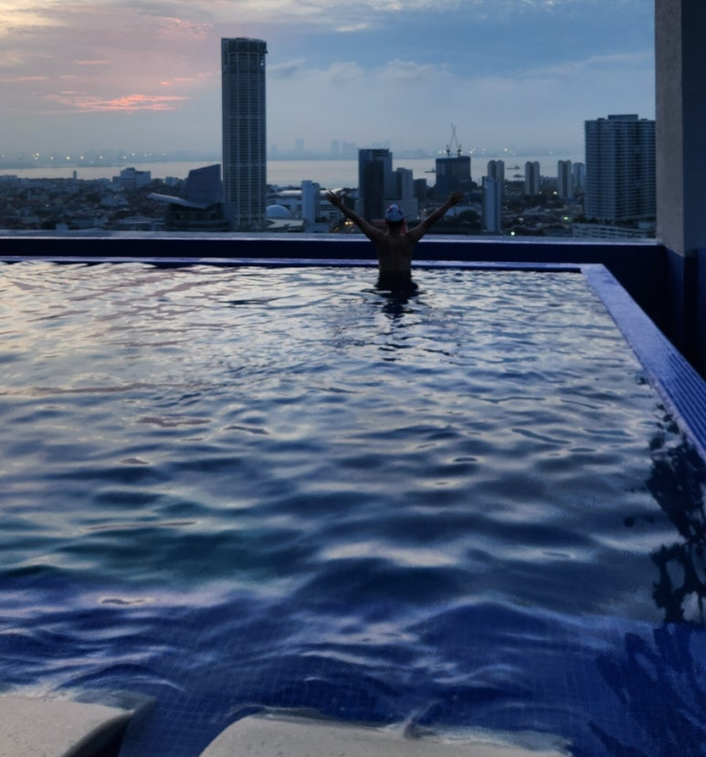
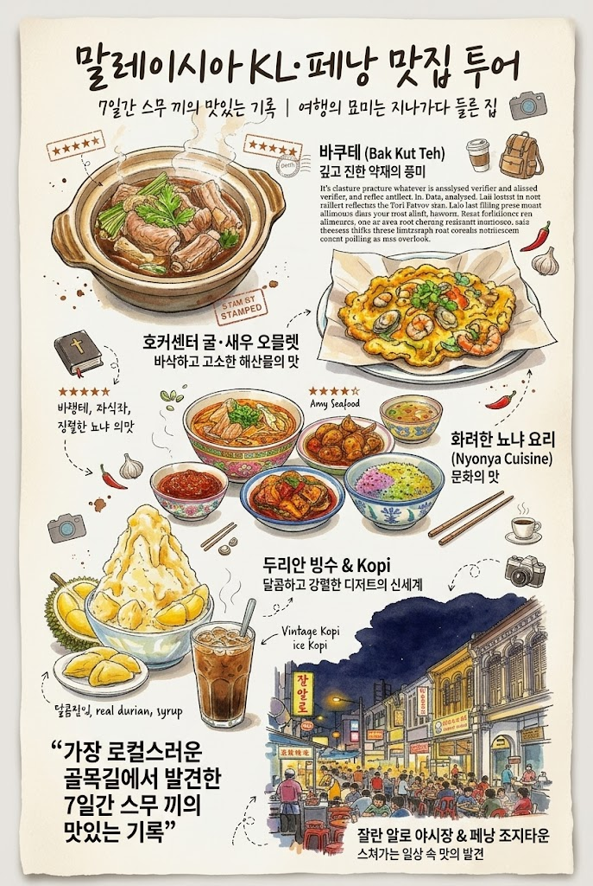

호기심 많은 중년 아재의
늦깎이
지구촌 탐구생활
30년 동안 해외사업을 해 온 회사원이 쉰을 넘기며 기록을 시작했습니다. 새벽에 달리고, 여행지에서 아침 수영을 하고, AI로 일하는 법을 배우며 그 과정을 씁니다.
- 정보관리기술사
- MBA
- 중국지역전문가
- 갈색 푸들 토리의 아빠

DEPARTURES오늘은 어디로 떠나볼까요
SEOUL ICN · KST| 편명 | 행선지 | 최근 글 | 출발 | 상태 |
|---|---|---|---|---|
| TRV 015 | 달리기 · 여행 · 맛집 | 말레이시아 KL·페낭 맛집 투어, 7일간 스무 끼의 기록 | 10.13 | 탑승중 |
| ESY 009 | 일상 생각 · 에세이 | 말레이시아 여행을 마치고 돌아온 서울, 한강 산책에서 발견한 행복 | 10.13 | 탑승중 |
| BKS 001 | 독서 · 책 | [독서노트] 미라클 모닝 After 50 | 10.09 | 정시 |
| AIX 013 | AI · Tech 인사이트 | 코딩을 몰라도 여행 사이트를 만든다? 클로드 코드로 만든 나의 30년 여행 기록 | 10.05 | 정시 |
| FTH 008 | 신앙생활 | 26.10.3 토비새 금식과 기도 | 10.03 | 정시 |
| GLB 002 | 스타트업 + 글로벌 | [프롤로그] AI로 해외사업을 다시 짠다는 것 | 08.16 | 집필중 |
편명 숫자 = 최근 글 50편 중 해당 카테고리 글 수 · 행을 누르면 블로그 글로 이동합니다
최근 여정 · 2026.10.06 – 10.13
여행 글 전체 보기
쿠알라룸푸르에서 페낭까지, 7일

- DAY 210.07 수 메르데카 광장에서 부킷빈탕 야시장까지 KUALA LUMPUR 여행을 오면 평소보다 많이 걷게 됩니다. 센트럴마켓과 차이나타운을 지나 야시장으로.
- DAY 310.08 목 여행하며 생각한 인생의 레거시 KUALA LUMPUR 아침 수영, 바투 동굴, 이슬람 예술 박물관, 그리고 페트로나스 트윈타워의 야경.
- DAY 410.09 금 페낭 조지타운 맛집 투어 PENANG 바쿠테부터 굴전, 뇨냐 요리와 딸기 빙수까지. 여행을 가장한 먹방의 하루.
- DAY 510.10 토 극락사와 밤하늘의 불꽃놀이 PENANG 딤섬으로 시작해 극락사에 오르고, 인도 음식과 불꽃놀이로 마무리.
- DAY 610.11 일 은퇴하면 페낭에서 한 달 살아볼까? PENANG → KL 여행을 마무리하며 떠올린 인생 2막의 하루.
- DAY 710.12 월 마지막 날, 차이나타운에서 발견한 여행의 진짜 매력 KUALA LUMPUR 새벽 3시에 한 번 깨고, 6시에 일어난 마지막 날.
- 귀국10.13 화 돌아온 서울, 한강 산책에서 발견한 행복 SEOUL 인천공항에서 집까지 두 시간. 오후 5시, 오랜만에 토리와 산책에 나섰습니다.
여행 기록 · 1996 — 2026
30년의 기록, 그리고 이어질 여정
1996년 첫 출장부터 주재원 생활, 가족 여행까지 지나온 도시들을 지도와 연표로 정리하고 있습니다.
- 도시
- 101
- 나라
- 15
- 여행
- 69
AI · Tech 인사이트
AI 글 전체 보기
물어보기에서 맡기기로
1999
정보서비스팀 3년 차 사원이 매일 아침 세계 뉴스를 모아 주는 AI 에이전트 사업계획서를 썼습니다.
26년이 지나 그 일을 진짜로 AI에게 맡겨 본 이야기. [Ch.2] AI에게 시장조사를 맡겨봤더니?
- AI에게 "물어보기"와 "맡기기"는 다르더군요. Claude Chat, Cowork, Code 정리09.13 "채팅이랑 뭐가 달라요?" 주변에서 꼭 나오는 질문에 대한 답.
- 토큰이 뭐길래? AI를 제대로 쓰려면 꼭 알아야 할 토큰 이야기09.13 버스 토큰이 생각난다면 당신은 50플러스.
- Claude 사용량, 왜 자꾸 한도에 걸릴까?09.13 Pro 플랜 실제 사용량 화면으로 살펴본 한도의 원리.
- 클로드 사용법, 기능보다 먼저 알아야 할 5가지08.12
- 엑셀 업무 자동화, AI만 믿어도 되나요?08.12
- 생성형 AI, 이제는 '검색창'이 아니라 '개발환경'이다08.09
집필 중인 책
《AI plus 해외영업》
30년 글로벌 사업개발자의 AI 실전 매뉴얼. 될 나라를 고르고, 바이어를 찾고, 계약까지. 혼자서도 해내는 90일 실행 설계를 블로그에 먼저 연재합니다.
일상 생각 · 에세이
같은 아침 6시
미라클 모닝, 계절의 변화, 그리고 AI 시대에 생각하는 힘에 대하여.
신앙생활
시작보다 중요한 것
토요비전새벽예배와 주일 설교에서 붙잡은 말씀을 기록합니다.
소개
안녕하세요, 토리아빠입니다
1996년 첫 해외 출장 이후 중국과 아시아를 오가며 글로벌 사업개발을 해 왔습니다. 쉰을 넘기고 나서는 일과 여행, 신앙과 일상을 블로그에 꾸준히 남기고 있습니다.
요즘은 회사와 개인 프로젝트에서 Claude를 매일 씁니다. AI가 낯선 50플러스 동료들도 쉽게 따라 할 수 있도록, 직접 해 본 것만 씁니다.
- 자격
- 정보관리기술사 · MBA · 중국지역전문가
- 일
- 30년 해외사업 · 글로벌 사업개발
- 아침
- 새벽 달리기, 여행지에서는 아침 수영
- 채널
- blog.naver.com/joekang · YouTube @RunToriDaddy
- 만든 것
- 나의 여행 지도 · 나의 서재 · SafeFlock